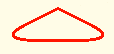
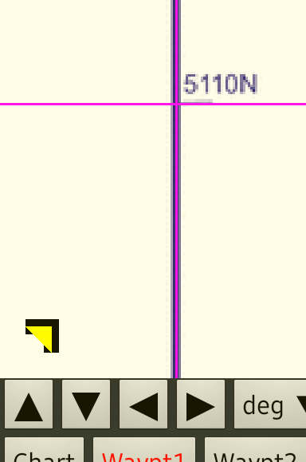
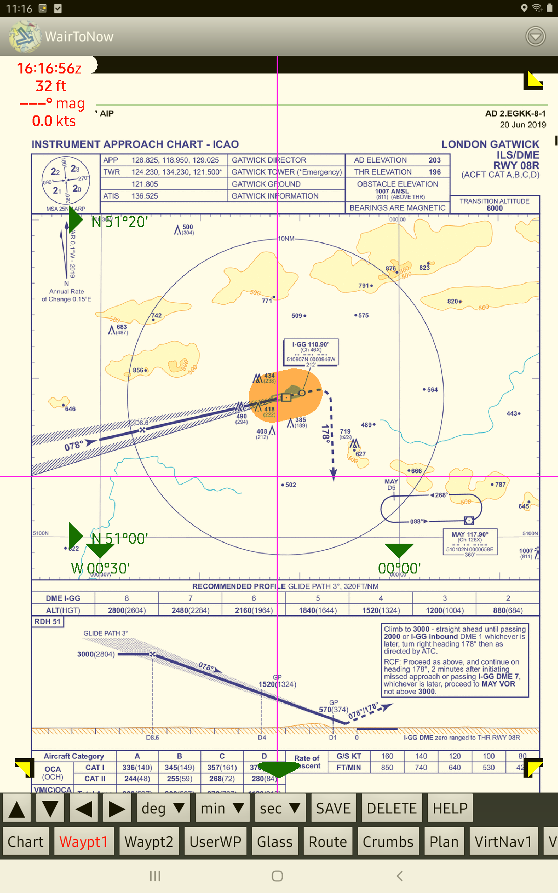
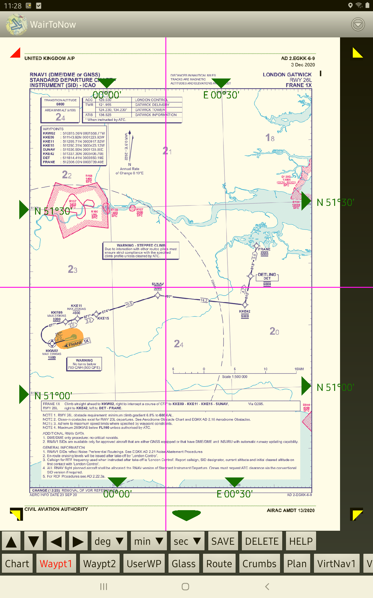
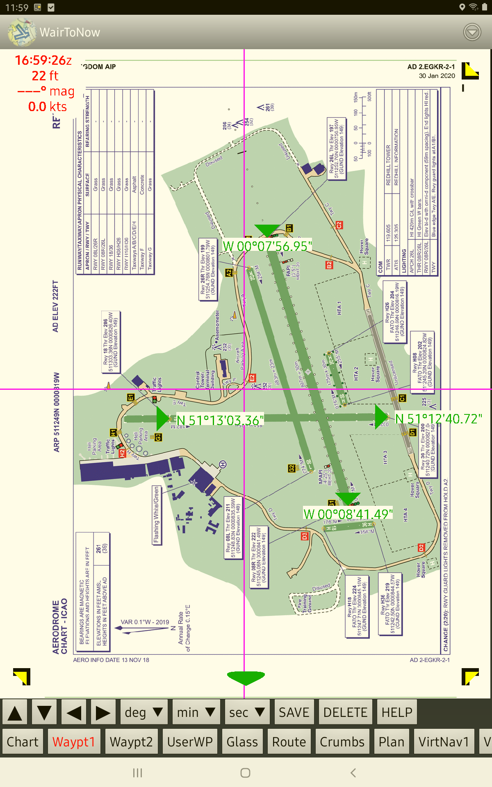

European Plate Georeferencing
Some of the plates have georeference information provided by the server. Plates that
do not have server georeferencing can be manually georeferenced. You can download
manual georeferences contributed by other users and you may contribute georeference
information that you create.
Plate Georeference Status
There are two types of manual georeferencing:
- Four Point: This method can be used when the lat/lon lines on the plate to
be georeferenced are vertical and horizontal, ie, no noticeable rotation or pinching
is present. Two of the points must define latitudes and the other two must define
longitudes.
- Place the two latitude points anywhere with the greatest separation of
latitude values. Likewise with longitude points.
- Eight Point: This method must be used when the Four Point method can
not, ie, there is some rotation and/or pinching. Four of the points must define
latitudes and the other four must define longitudes.
- Place two points close to each of the four edges of the plate. The points
along any one edge should be separated as much as possible.
Entering a Point
- Open the georeference editing buttons by clicking the triangle button
 near the bottom of the screen.
A red triangle indicates that some more points are needed for georef
to be valid. Green means there are enough points to georef the plate.
Gray means there is server-provided georeferencing for the plate, but
you can override it by entering manual georefencing information.
- Click the arrow buttons to move the
magenta cursor lines to the georeference point to be entered.
Long hold press for large jumps; quick taps for small steps.

- Use the deg min sec buttons to enter either a latitude or
longitude for the given point. Use FreeForm to enter minute or second
values with the keyboard.
- Click SAVE to write the point to flash storage. A triangle will be placed
at the saved point with the saved numeric value. If no triangle appears, make sure
that degrees, minutes and seconds have been entered.
- Repeat until all 4 or 8 points have been entered. The triangles will turn green
when a valid mapping has been entered. You may get 4 green on the way to entering
8 points, but the mapping with the 4 is probably not correct and you should proceed
to enter a total of 8.
Deleting a Point
- Use arrow buttons to move cursor somewhere on the triangle of the point to be
deleted. The triangle should turn yellow.
- Click the DELETE button.
Contributing a Georeference
Once you have completed a georeference and it shows the markers in green, you can
contribute the mapping for others to use by clicking the CONTRIB button.
Internet connectivity is required for this to work. If you do not have connectivity
at the moment, you can contribute it later.
4 Point Example
This example only needs 4 points because the latitude and longitude lines are horizontal
and vertical within a couple pixels. It's easy to tell that they are vertical and
horizontal by placing the magenta cursor lines over the latitude and longitude lines.
There are 2 latitude markers along the left edge and 2 longitude markers along the
bottom edge.

8 Point Example
This example requires 8 points because the latitude and longitude lines are not horizontal
and vertical. There are 2 markers along each of the 4 edges. If only 4 points were given,
the aircraft placement wouldn't be correct when a distance away from the 4 given points.

4 Point Aerodrome Example
This example of using 4 points uses 4 runway ends to give a good spread of latitude and
longitude inputs. The east/west runway gives a good spread of longitude, and the
north/south runway gives a good spread of latitude.
It is valid to use 4 points because the diagram is oriented East up, so the lines of
latitude and longitude are vertical and horizontal. If the diagram were slightly
rotated, eg, 100° up, 8 points would be needed.
